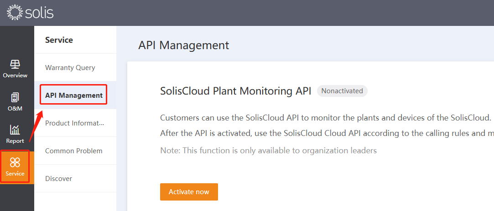
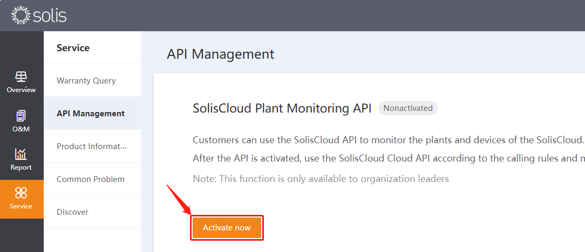
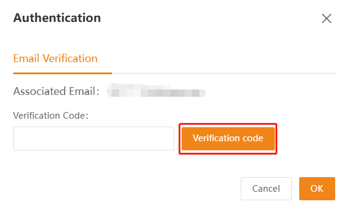
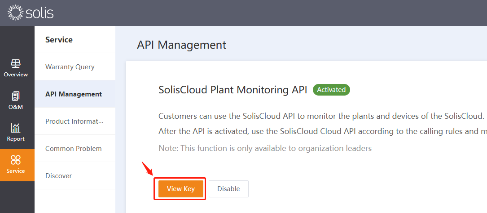
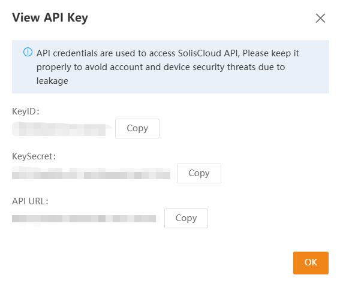
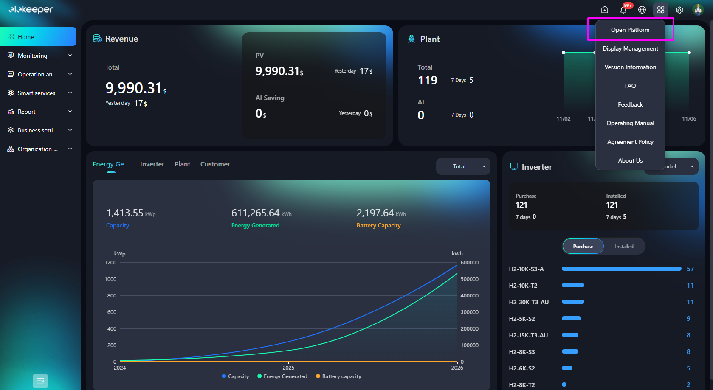

Solar monitoring platform integrations · TSBA AI Agent · Prepared 2026-11-06
Two providers require a support request to unlock API access. The drafts below are ready to send
— replace the highlighted placeholders and send each
from the account's registered email address so support can verify ownership.
SolisCloud and Elekeeper are self-service and need no email (summarised at the bottom).
3 WHEC Echo-Hub
OpenAPI enablement Support request
Email draft
ToWHEC Echo-Hub Support <[support email]>
From[Registered Account Email]
SubjectRequest to Enable OpenAPI Access on Our Account
Dear WHEC Echo-Hub Support Team,
We would like to request that OpenAPI access be enabled on our account.
Account details:
- Account name / ID: [Account Name / ID]
- Registered email: [Registered Account Email]
- Company: [Company Name]
We intend to use the OpenAPI to integrate our plant and device monitoring data
into our internal energy-management platform.
Please let us know if any additional verification or documentation is required
to proceed. We look forward to receiving the API credentials and documentation.
Thank you for your assistance.
Best regards,
[Your Name][Company Name][Contact Phone]
Send from the registered email. Identity is verified against the account's
registered address — sending from any other mailbox will likely delay or reject the request.
4 Solarman
Developer / OpenAPI activation Support request
Email draft
ToSolarman Support <[support email]>
From[Registered Account Email]
SubjectRequest to Activate Developer / OpenAPI Access
Dear Solarman Support Team,
We would like to request activation of the Developer option / OpenAPI access
for our account.
Account details:
- Account name / ID: [Account Name / ID]
- Registered email: [Registered Account Email]
- Company: [Company Name]
We plan to integrate our plant monitoring data (production, device status, and
historical generation) into our internal platform via the OpenAPI.
Please advise on any additional steps, agreements, or verification needed to
enable developer access, and provide the App ID / App Secret and API
documentation once activated.
Thank you for your support.
Best regards,
[Your Name][Company Name][Contact Phone]
Send from the registered email. Solarman activates developer/OpenAPI access
manually after verifying account ownership from the registered address.
Self-service platforms (no email required)
1 · SolisCloudOnly available to organization leaders (owner / administrator account).
Log in with the owner/administrator account. In the left sidebar open Service, then select
API Management.
On the SolisCloud Plant Monitoring API panel (status: Nonactivated), click
Activate now.
Complete Email Verification: click Verification code, enter the code sent to
the associated email, then click OK.
The status changes to Activated. Click View Key to open the credentials.
Copy the KeyID, KeySecret, and API URL — these are
used to authenticate against the SolisCloud API.

Step 1 — Service → API Management.

Step 2 — Click Activate now.

Step 3 — Email verification: request the code and confirm.

Step 4 — Status Activated; click View Key.

Step 5 — Copy KeyID, KeySecret and API URL.
Keep these credentials secret. Store the KeyID / KeySecret in .env or a secrets
manager — never commit them to version control.
2 · Elekeeper (SAJ)
Log in to the Elekeeper portal.
In the top-right toolbar, click the apps / grid icon (⊞) and select
Open Platform from the dropdown.
On the Developer Platform page, under Autonomous Account, click
Create Developer Organization and complete the setup to obtain development resources
(API credentials).
Use Third-Party Account → Select third-party developers only to
authorize an existing external developer.

Step 2 — Apps menu (top-right): select Open Platform.